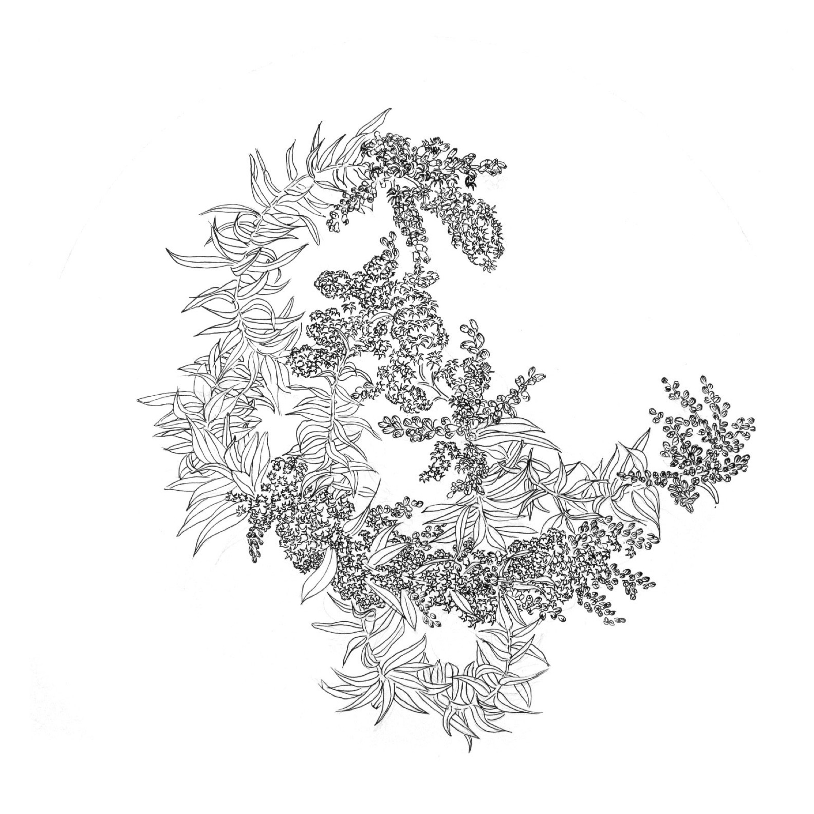
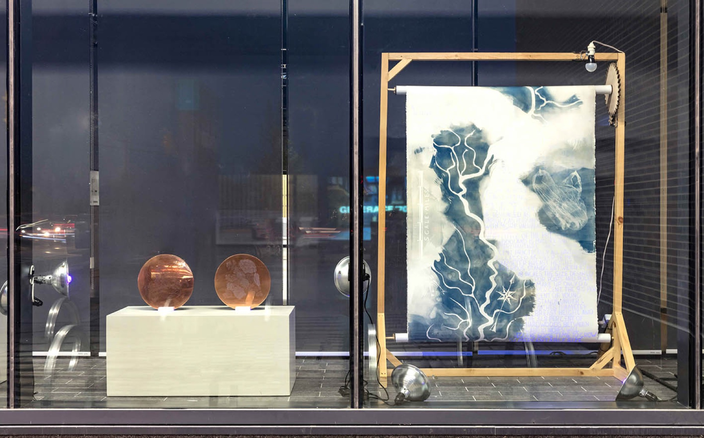
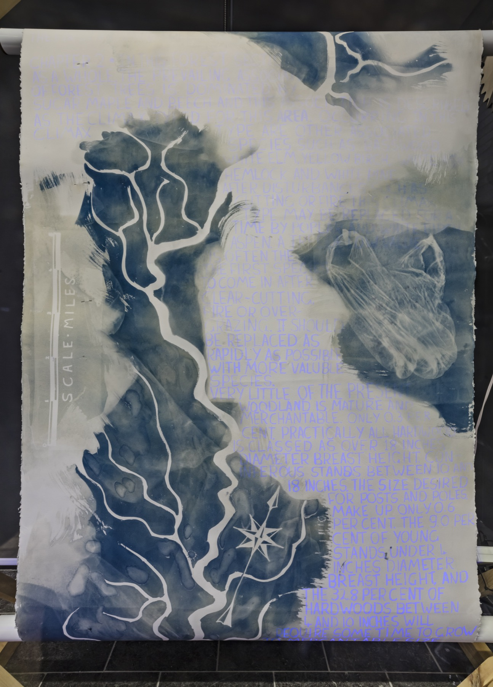

← Portfolio


River Credits
An installation that activates after dark. Verstappen researched the Credit River Valley through the Peel Art Gallery archives, then traced the river using cyanotype — "a technique commonly known as 'blueprint' that is historically used to reproduce technical drawings, maps, and botanical illustrations." The resulting narrative, rendered in ultraviolet ink, documents habitat destruction during European settlement.
The work invites viewers to experience their surroundings through an insect's perspective, and to contemplate our coexistence with other living beings. It examines "the complicated relationships of dependence and sustenance between humans and other life systems with which we co-exist."


